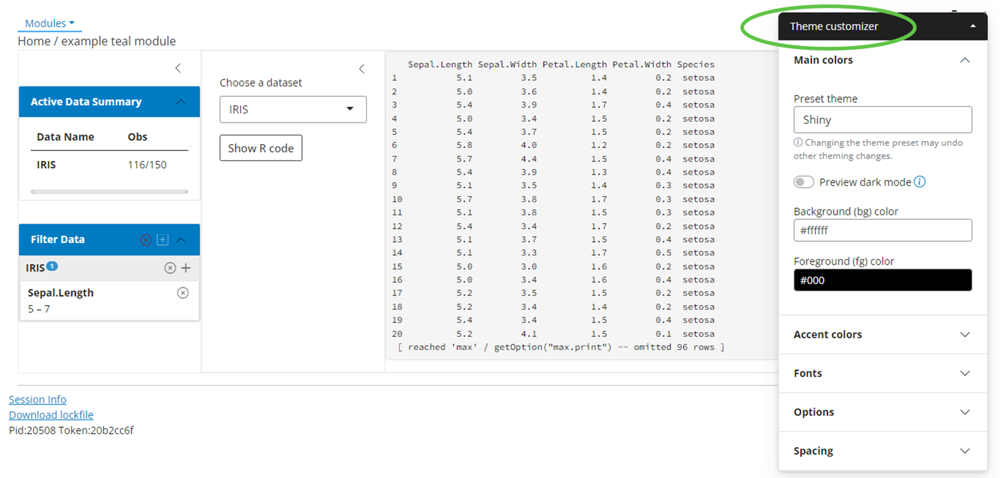
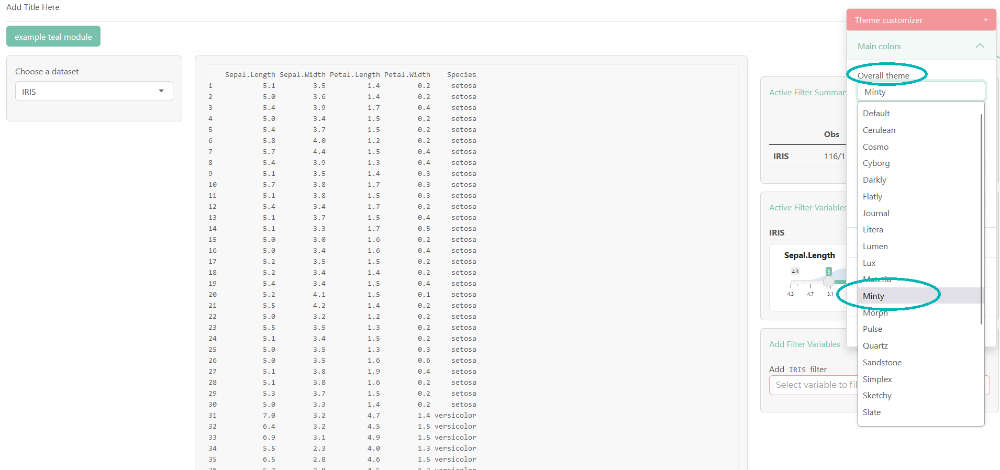
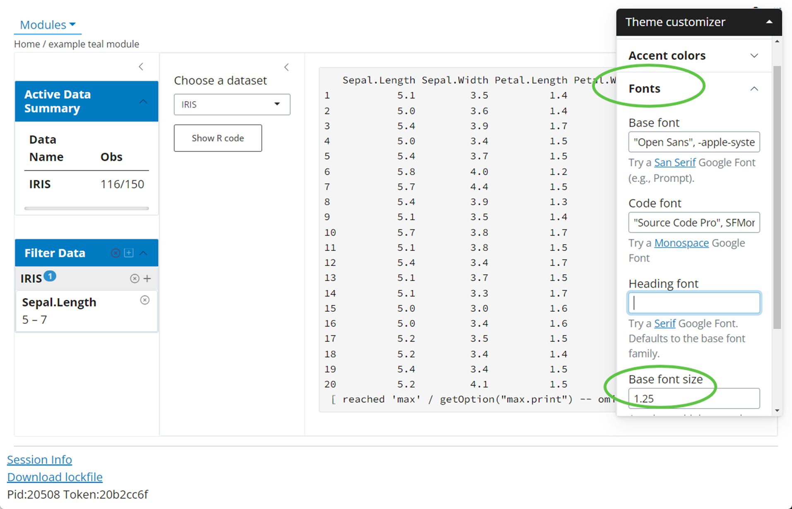

Bootstrap Themes in teal
NEST CoreDev
Source:vignettes/bootstrap-themes-in-teal.Rmd
bootstrap-themes-in-teal.RmdIntroduction
We offer an easy application of a custom Bootstrap theme in a
teal app. teal uses the bslib
R package which provides tools for customizing Bootstrap
themes, including those of shiny apps.
Usage
teal app developers can specify custom Bootstrap themes
by setting the teal.bs_theme R option, which
has to be set to bslib::bs_theme object. The
bslib::bs_theme(...) function creates a Bootstrap theme
object, where one specifies the (major) Bootstrap version (default or
one of 3, 4, or 5). Optionally one can choose a
bootswatch theme and customize the
app CSS with functions like bslib::bs_add_rules.
Please read more about custom themes in the
bslib getting started vignette. The
teal.bs_theme R option has to be specified at
the top of the code script.
Please install bslib package before you run the code
below.
teal.bs_theme R option
options("teal.bs_theme" = bslib::bs_theme("Custom Options"))
#######################
# teal::init() app code
#######################Bootstrap version and themes
The best and recommended ways to explore the
Bootstrap themes are to use
bslib::run_with_themer(shinyApp(app$ui, app$server)) or
bslib::bs_theme_preview(), both of which offer an
interactive explore mode (not supported for Bootstrap 3). The
bslib::bs_theme_preview() is recommended when the end user
does not have any shiny app yet. When you already have a
shiny app and you want to test different Bootstrap themes
(and CSS styling) then
bslib::run_with_themer(shinyApp(app$ui, app$server)) is
recommended.
Available Bootstrap versions could be checked with
bslib::versions() and Bootstrap themes
(bootswatch) with
bslib::bootswatch_themes(version = "5").
# bslib::versions()
# bslib::bootswatch_themes(version = "5")
options("teal.bs_theme" = bslib::bs_theme(version = "5", bootswatch = "lux"))
# or
options("teal.bs_theme" = bslib::bs_theme_update(bslib::bs_theme(version = "5"), bootswatch = "lux"))Default Bootstrap theme
When using the default bslib theme for any version (3, 4
or 5), its styling might not be as expected. Please run the interactive
themer (recommended) or apply a custom theme to explore all the theme
options. In many scenarios updating only the theme might not be
enough and e.g. font color and other specifications should be updated
too.
# instead of
options("teal.bs_theme" = bslib::bs_theme(version = "5"))
# try non-default themes
options("teal.bs_theme" = bslib::bs_theme(version = "5", bootswatch = "THEME NAME". ...))
# or run the app inside bslib::run_with_themerReset the Bootstrap theme
Please use the options("teal.bs_theme" = NULL) call to
return to the default shiny Bootstrap for teal
apps.
Theme not updated
One reason the theme is not updated could be that the web browser
caches the previous one, especially when different themes are run one
after another. Please, use the Cmd+Shift+R (Mac) or
Ctrl+F5 (Windows) to hard refresh the webpage.
Custom teal CSS
The most important HTML tags in teal have a specific id
or class, so they can be directly styled. The
bslib::bs_add_rules function could be used around the
bslib::bs_theme object to apply custom CSS
rules.
library(magrittr)
options("teal.bs_theme" = bslib::bs_theme(version = "5") %>% bslib::bs_add_rules("Anything understood by sass::as_sass()"))Other bslib::bs_add_* family functions could be used to
specify low-level Bootstrap elements.
Bootstrap NULL vs Bootstrap 3
It is important to note that the statements
options("teal.bs_theme" = NULL) and
options("teal.bs_theme" = bslib::bs_theme(version = "3")
are not equivalent as the bslib approximation of the
default shiny theme for Bootstrap version 3 can introduce
some discrepancies. One important difference is that when using
bslib::bs_theme(version = "3", bootswatch = "THEME NAME")
one can apply the custom Bootstrap theme. Another one is that the usage
of bslib::bs_theme(version = "3") requires the installation
of the latest shinyWidgets package from the main branch,
see below.
# Downloading the newest shinyWidgets
# needed only when bslib::bs_theme(version = "3", ...) is used
remotes::install_github("https://github.com/dreamRs/shinyWidgets@main")Regular shiny::fluidPage
If you want to update the theme in a regular
shiny::fluidPage-like app, you do not need the
teal.bs_theme option. Simply provide the
bslib::bs_theme directly:
shiny::fluidPage(theme = bslib::bs_theme(...), ...).
Interactive theming guide
In this section we provide a step-by-step guide to customizing a
teal application theme interactively with
bslib::run_with_themer(). We recommend starting with a
simple case and once you are satisfied, verifying with your full
application. To that end we will use the teal application
below. For this example we assume that we want to use Bootstrap 5. To
start, we launch the app with
bslib::run_with_themer(app$ui, app$server) instead of
shiny::shinyApp.
options("teal.bs_theme" = bslib::bs_theme(version = "5"))
library(teal)
app <- init(
data = teal_data(IRIS = iris),
filter = teal_slices(teal_slice("IRIS", "Sepal.Length", selected = c(5, 7))),
modules = modules(example_module(), example_module()),
header = "My first teal application"
)
bslib::run_with_themer(shinyApp(app$ui, app$server))This gives us the following.

Note the Theme Customizer section on the right hand
side. This was added by bslib and is how we customize our
theme.
Set overall app theme
Instead of starting from scratch, we want to start with a Bootswatch theme. Let us
select the Minty theme in the “Overall theme” drop-down.

bslib has updated our CSS styles to use our
new theme, including the customizer theme. Additionally, if
we look at our R console, we will see
#### Update your bs_theme() R code with: #####
bs_theme_update(theme, bootswatch = "minty")This is a helpful guide that provides code to update our theme. For
teal applications we don’t actually use
bs_theme_update and opt for bs_theme instead.
However, the printed code will still be helpful.
Customize a bootswatch theme
Our base theme (Minty) is close to what we want but let’s make a few
modifications. To start, we will increase the base font size. To do
this, we choose the “Fonts” section of the customizer theme
and then set a value in the “Base font size” input. We use 1.25 here,
which means all our fonts will be increased by a factor of 1.25. If we
check the R console, we will see bslib has
printed
bs_theme_update(theme, font_scale = 1.25, bootswatch = "minty"),
which now includes our font size adjustment.

Finally, suppose we do not want borders to be rounded. In our
customizer theme, we can go to “Options” and then uncheck
the “Rounded corners” box.

As expected, our corners are no longer rounded. If we look at our
R console, we will now see
bs_theme_update(theme, font_scale = 1.25,enable-rounded= FALSE, bootswatch = "minty").
Apply the customized theme
Once our customization is complete, we will apply the changes to our
application. To do this, we use the option teal.bs_theme
like before but this time we will expand on our
bslib::bs_theme call to include our changes. Luckily, the
arguments that were printed to the R console when running
our app in the themer can be plugged right in.
options(
"teal.bs_theme" = bslib::bs_theme(
version = "5",
font_scale = 1.25,
`enable-rounded` = FALSE,
bootswatch = "minty"
)
)
library(teal)
app <- init(
data = teal_data(IRIS = iris),
filter = teal_slices(teal_slice("IRIS", "Sepal.Length", selected = c(5, 7))),
modules = modules(example_module(), example_module())
)
shinyApp(app$ui, app$server)Now the application has our custom theme applied.

Please note the interactive themer only contains the most commonly
applied options. For more customization options, review the
bslib documentation.